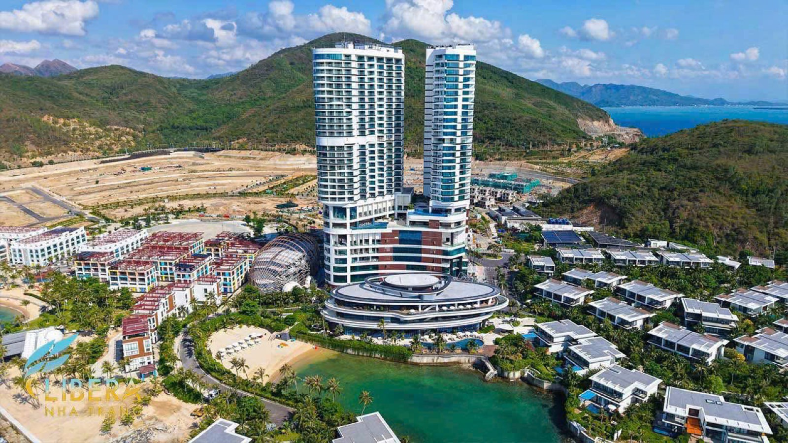
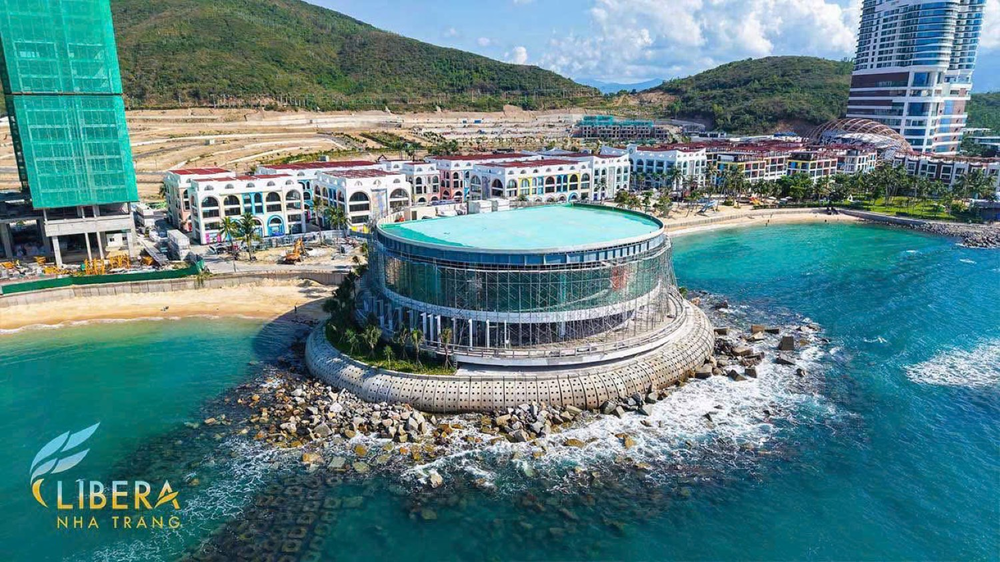

Vega City hay Libera Nha Trang? Hiểu đúng tên gọi trước khi chọn mua
Khách hay hỏi tôi: "Vega City với Libera Nha Trang là hai dự án khác nhau à?" — rồi thêm Gran Meliá, La Tiên, Alora nữa là rối hoàn toàn. Bốn năm cái tên, mà thật ra cùng một khu đất ở Bãi Tiên.

Nghe thì nhỏ, nhưng nhầm tên ở đây không phải nhầm chữ — mà là nhầm giá, nhầm pháp lý, nhầm tiến độ bàn giao. Bài này tôi gỡ rối một lần cho gọn.
1. Ai là ai trong quần thể này
Khu đất nằm ở Bãi Tiên, Bắc Nha Trang — lưng dựa núi Cô Tiên, mặt hướng biển, quy mô khoảng 44 ha do KDI Holdings phát triển, tổng thầu xây dựng là Hyundai E&C.
| Tên | Thực chất là gì |
|---|---|
| Vega City | Tên dự án theo hồ sơ pháp lý — cái tên xuất hiện trong giấy tờ và các bài báo giai đoạn đầu |
| Libera Nha Trang | Tên thương mại của cả quần thể đô thị — cách gọi chủ đầu tư đang dùng hiện nay |
| Gran Meliá, La Tiên… | Các dòng biệt thự bên trong quần thể |
| Alora và các tòa tháp | Các dòng căn hộ bên trong quần thể |
Nói ngắn gọn: Vega City và Libera Nha Trang là một; còn Gran Meliá, La Tiên, Alora là những "khu phố" khác nhau bên trong cùng một đô thị đó.
Lưu ý nghề: chủ đầu tư có thay đổi cách gọi theo từng giai đoạn truyền thông. Khi xem tài liệu cũ trên mạng, phải đối chiếu lại — tên trong bài báo năm ngoái có thể không còn khớp cách gọi năm nay.
2. Điểm mạnh thật của khu này nằm ở đâu
Bỏ qua ngôn ngữ quảng cáo, tôi thấy ba thứ đáng nói:
Vị trí "lưng núi mặt biển". Khu Bãi Tiên nằm ở phía Bắc thành phố, tách khỏi khu trung tâm đông đúc nhưng vẫn trong bán kính di chuyển ngắn — kiểu vị trí phù hợp với người muốn ở/nghỉ dưỡng hơn là người cần tiện ích phố xá sát bên.
Hệ thương hiệu vận hành quốc tế. Đây là điểm ít dự án có: các dòng sản phẩm trong quần thể được gắn với những đơn vị vận hành khách sạn – nghỉ dưỡng khác nhau, tạo thành một "bậc thang" từ tầm trung đến cao cấp. Với người mua để khai thác cho thuê, ai vận hành quan trọng không kém vị trí.
Đã có phần hình thành thật. Không còn là bản vẽ: bãi biển, khu thấp tầng, các tòa tháp và công trình điểm nhấn ven biển đã hiện hình — như trong hai tấm ảnh của bài này.

3. Ai hợp với dòng nào?
Đây là phần tôi hay ngồi rất lâu với khách, vì chọn sai dòng sản phẩm còn tai hại hơn chọn sai dự án.
- Biệt thự (Gran Meliá, La Tiên…) — hợp với người có vốn lớn, mua để dùng thật vài kỳ nghỉ trong năm và giữ tài sản dài hạn cho gia đình. Không hợp người cần thanh khoản nhanh.
- Căn hộ trong các tòa tháp (Alora…) — hợp với người vốn vừa phải, mua để khai thác cho thuê hoặc để dành; đây cũng là dòng có mức vào thấp nhất quần thể.
- Shophouse — hợp với người muốn vừa kinh doanh vừa giữ đất, nhưng phải tính kỹ lượng khách thực tế của khu trong 2–3 năm đầu, khi cộng đồng cư dân chưa lấp đầy.
Dù chọn dòng nào, tôi vẫn bắt khách trả lời 5 câu hỏi về căn hộ dòng tiền — và nếu sản phẩm có kèm cam kết thuê thì đọc thêm bài mổ xẻ cam kết thuê 7%/năm.
4. Ba câu phải hỏi trước khi xuống tiền ở bất kỳ quần thể lớn nào
Một: "Căn này thuộc phân khu nào, tên đúng theo hợp đồng là gì?" — vì giá, pháp lý và thời điểm bàn giao khác nhau theo từng phân khu.
Hai: "Sổ ở đây là lâu dài hay có thời hạn?" — với sản phẩm ven biển, đây là câu quyết định giá trị dài hạn.
Ba: "Đơn vị nào vận hành, và khi hết giai đoạn đầu thì ai lo cho thuê?" — câu này quyết định căn hộ của anh/chị là tài sản sinh lời hay chỉ là chỗ để tiền.
Tôi bán trực tiếp dự án này, và vẫn giữ nguyên nguyên tắc nói rủi ro trước khi nói lợi nhuận: quần thể đẹp không có nghĩa mọi căn trong đó đều hợp với anh/chị.
Thông tin theo tài liệu chủ đầu tư và cách định danh sản phẩm cập nhật đến 08/2026; tên phân khu, giá và chính sách bán hàng thay đổi theo từng đợt — vui lòng liên hệ để nhận bản mới nhất tại thời điểm anh/chị quan tâm.
Sống tử tế · Kiếm tiền hạnh phúc · Cho đi giá trị
Muốn biết dòng nào hợp với ngân sách của anh/chị?
Nhắn tôi mức vốn và mục đích mua (ở, cho thuê, giữ tài sản) — tôi gửi bảng giá cập nhật đúng phân khu phù hợp, kèm mặt bất lợi cần cân nhắc. Miễn phí, không ràng buộc.
Nhắn Zalo — 0869 668 638